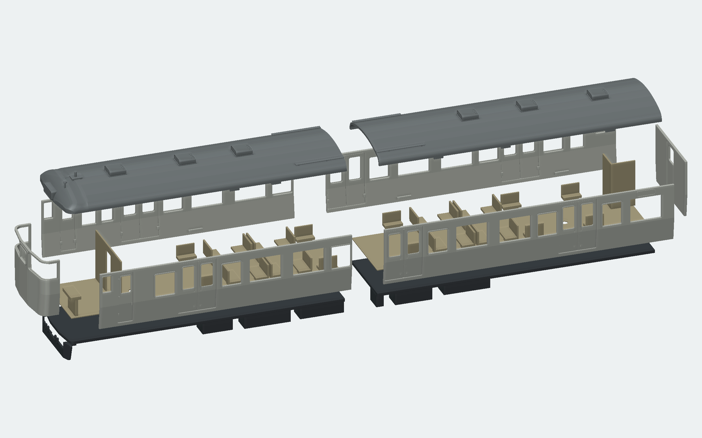

2026-10-27。10段階の実物写真照合と形状改訂を完了。続けて通常板組版と小型分割版を生成し、実形状・保存・出力・組立経路・Windows表示を検証した。 モデル3版・10回の画像・製作と組立手順・出力ZIP。
クハ115-1222の前面、屋根、両側面写真を基準とする。N15訓練車・湘南色時代の写真は形状確認に使い、標記と塗装は長野色営業時代の設計案として分ける。 原写真掲載資料。
前面貫通扉窓はオーナー指示の幅7.2×高さ5.8 mmを維持する。局所R、窓配置、接着隙間は写真からの模型設計値であり、実車を実測した寸法ではない。
| 回 | 観察・対処 | 状態 |
|---|---|---|
| 1 | 前面と屋根の境界で約0.415 mmの段差。前頭の長手Rを変更し、折妻平面に連続させた。STL断面の最大段差0.00008 mm未満。これは継ぎ目のモデル内比較であり、実車精度ではない。 | 234部品の実形状・STL・3方向画像を確認 |
| 2 | 屋根肩が急。幅・頂点・軒高さを保ち横断R40→48 mm。対称面での点分類誤判定と付属品のSTL体積誤差を修正。 | 234部品・点・接触・画像を確認 |
| 3 | 行先表示膜の奥まりを修正し、文字も表示面へ追従。 | 膜と枠の有限接触 |
| 4 | 灯具の筒を折妻の実外板へ延長して切り合わせ。 | 前照灯・尾灯4か所の接触と内外分類 |
| 5 | リングの0.02 mm隙間を解消。レンズ・反射板の取付座を追加。 | 4灯の積層部品の接触と形状 |
| 6 | 左右4か所の窓を移動。最小窓柱幅0.025→0.825 mm。 | 柱、窓穴と隣のサッシ |
| 7 | クーラーの連続した納まりを維持。歩み板厚0.3 mmを確保。 | 8脚の局所接触、断面表示 |
| 8 | 屋根に10本の一体案内脚。側面の設計隙間0.2 mm。 | 単一閉ソリッド、10点の分類 |
| 9 | 側壁内側に床板の受け座6か所。 | 各接触面積、室内床の空間 |
| 10 | 室内床を下げず、裏に支持パッド8か所。 | 各パッドと床板の接触、座席高さを保持 |

左右側板・前面ラップ付き前妻・後妻・屋根・床板を主部品とする。パノラミック窓の曲面を途中で切らず、透明材を別にする。これは GreenMaxエコノミーキットの板組構成を参考にした独自のHO設計であり、メーカー製品との互換を意味しない。
扉を隠れる接続部で外板へつなぎ、窓枠を融合。細い取手や灯具を無理に全部一体化せず、冷房装置・ガラス・台車・連結器も別部品にした。 小型版は窓・扉を避け側板と透明材をX=117.8 mm、屋根・床板・室内床をX=121.875 mmで前後分割し、5枚の添え板を追加。 初回に検出した室内添え板の0.1 mm浮きは修正済み。
通常105／小型117可視部品のうち造形候補72／84、帯材・金属線・薄板等の参照33。235.75 mmの雨樋2本も参照へ分けた。 造形候補の最長は通常244.60 mm、小型124.95 mm。支持と配置の余白は別に必要。STLは部品ごとの造形座標、STEPは組立座標。 側面透明材は段付き立体で、平板PET一枚物の型紙ではない。
| 版 | 部品 | 点 | 接触 | 再結合 | 経路 | 全対→BRep候補 |
|---|---|---|---|---|---|---|
| 編集元 | 234 | 1131 | 165 | 0 | 0 | 27261→389 |
| 通常板組 | 105 | 1131 | 175 | 1 | 2 | 5460→179 |
| 小型分割 | 117 | 1131 | 185 | 8 | 2 | 6786→221 |
全可視部品のBRep有効性・単一閉ソリッド・正体積、全STEP再読込、STL閉鎖性・面向き・退化・体積差、全対の境界箱とBRep干渉、保存再読込を検査。 STL体積差上限0.2%、干渉許容1e-6 mm³を維持。保存再読込の最大体積差は編集元2.26e-14 mm³、板組2版0。 生成時の2／1グループの並びをCAD登録順へ正規化した保存ファイルを配布し、正規化後の再読込維持を確認。
屋根を上へ20 mm、床板と室内を下へ45 mm外す経路を、透明材と小型添え板を含めて検査した。逆順で組み立てる。 数点の位置だけで成功扱いせず、正重みBスプライン制御点の境界と掃引を使うモデル公差内の数値判定。数学的厳密証明や実物のはめ合い試験ではない。 細分化した面は毎回元面との差分を確認し、欠落・未完了なら粗い上限を保持する。
検査器は正常・欠落・重複・衝突・曲面・非グラフ面など13条件を通過。STEP/STLは検証直後のSHAを保存し、再利用時の既存SHA照合を必須とした。 古い対象・0経路・欠落・失敗・誤トークン・境界差・不正点・未署名STEP・改変STEP/STLを拒否する10条件も成功。 最終板組2版は補強後の検査器で全出力から実行し、旧出力の再利用ではない。
Windows通常表示は通常板組176.53秒／小型234.20秒で成功。詳細版は表示できたが、期待したキャッシュhitを確認できなかった試験は不合格のまま保全。 初回読込は依然として重く、今回解消したとは表示しない。
各段階は out/models/kuha115-tenround-20261027/ の別フォルダに生成源のコピー・SHA、対象モデル、実行コマンド、開始終了時刻、native評価、BRep/STL検査、画像を保存する。
途中失敗も保存し、古いモデル・旧版CAD・所有不明の未コミットモデルは変更・削除しない。
配布モデル・各回の固定ソースZIP・画像・結果は samples/series115-ho-panelkit-20261027/。
生成入口は tools/modeling/kuha115_ho/revised.py --refinement-pass 10、板組派生は panel_kit.py、
最終検証は validate_delivery.py、姿勢付き梱包は package_kit.py、資料収集は deliver_panel_kit.py。
既存ファイルの削除・不要化はない。